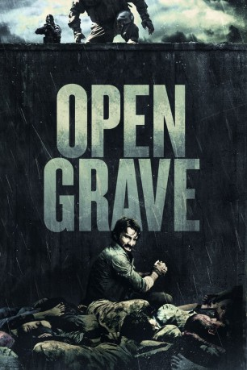

#9198 Open Grave
 
 IMDB-Wertung: 6.3 / 10
IMDB-Wertung: 6.3 / 10  Metascore: 0
Metascore: 0 
Stellt euch vor, ihr wacht auf und liegt mitten in einem riesigen Haufen voller Leichen, ihr seid vom Tod umzingelt und müsst euch durch diesen Leichenberg einen Weg in die Freiheit bahnen. John passiert genau das und er hat zudem keinerlei Erinnerung an das, was zuvor geschehen ist, geschweige denn, wie er dort hingekommen ist. Er flieht in das nächste Haus und hofft auf Hilfe. Dort stößt er jedoch auf eine Gruppe. All diese ihm unbekannten Menschen haben wie er auch ihr Gedächtnis verloren. Jeder einzelne ist skeptisch. Sie gehen Hinweisen nach, um zu erforschen, was wirklich passiert ist und wer für die vielen Leichen verantwortlich ist. Doch dann müssen sie feststellen, dass sie beobachtet werden. Und eine Frage quält sie ganz besonders: Ist der Mörder vielleicht unter ihnen?
Jahr: 2013
Dauer: 101 Minuten
FSK: 16
Land: USA Studio: Tribeca FilmTonspuren: DTS - ,
Untertitel: Deutsch,
Auflösung: 1080p (1920x792) Größe: 9134 MB
Genre: Thriller, Horror, Mystery
Regisseur: Gonzalo López-Gallego
Drehbuch: Eddie Borey
Soundtrack: Juan Navazo
Darsteller:
 Sharlto Copley als John / Jonah
Sharlto Copley als John / Jonah Thomas Kretschmann als Lukas
Thomas Kretschmann als Lukas Josie Ho als Brown Eyes
Josie Ho als Brown Eyes Joseph Morgan als Nathan
Joseph Morgan als Nathan- Erin Richards als Sharon
 Max Wrottesley als Michael
Max Wrottesley als Michael- Márta Szabó als Crone
- Balázs Szitás als Sickly Man
- Zsuzsa Szabados als Grandma
- Tofi Seffer als Boy
- Éva Botos als Mother
- Kati Dombi als Moaner Woman
- Araceli Sanz als Voice of Grandma
- Pedro De Santiago als Voice of Boy
- M. Frakes als U.S. Marine Driver (uncredited)
Datei: X:\2013(N-Z)\Open Grave (2013, FSK16, 1920x792).mkv seit 19.07.2018
Festplatte: HD 2013(I-Z)-2014(A-Z)
 Es gibt insgesamt 133 Filme in der Gruppe '2013(N-Z)'
Es gibt insgesamt 133 Filme in der Gruppe '2013(N-Z)'